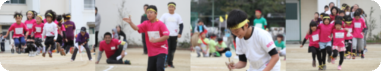
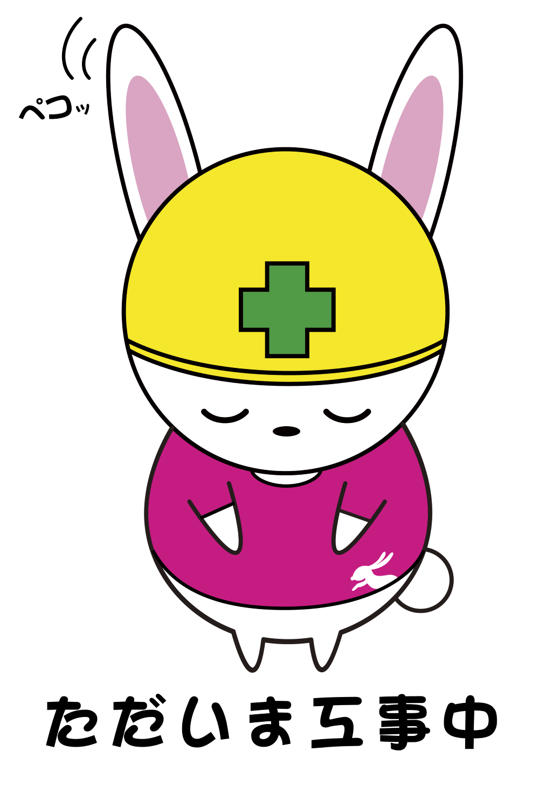

大阪市住吉区の学童保育
大阪市住吉区の学童保育「ただいま」が言える場所
放課後を過ごす生活の場として、
学童の雰囲気を丁寧に伝えます。
大阪市住吉区・うさぎ学童保育所
ここにあるのは、放課後の「わが家」。
あそぶ。わらう。いっしょに育つ。
学年をこえた仲間と過ごす、かけがえのない毎日。
うさぎ学童のこと、少しのぞいてみませんか。
※ このページは既存サイトを参考にした提案デモです。



PHOTO & CHARACTER FROM THE EXISTING WEBSITENEWS
ABOUT USAGI ✳
学校が終わったあとの、もうひとつの居場所。
遊びの中で発見したり、仲間と力を合わせたり。
何気ない放課後の時間が、子どもたちの毎日を彩ります。
うさぎ学童保育所は、大阪市住吉区にある学童保育所。
元サイトでは、小学1〜6年生を対象とし、
南住吉小学校・大空小学校を主な対象校として案内しています。
紹介文の表現は提案用です。対象・対象校は元サイトの掲載情報です。
放課後を過ごす生活の場として、
学童の雰囲気を丁寧に伝えます。
体を動かす時間も、行事も。
写真から日々の活動をご紹介。
学年をこえた仲間との関わりを、
身近に感じられるサイトへ。
OUR AFTER SCHOOL
お迎えのとき、つい話したくなる。
そんな放課後を、ここから。
※ 内容・時刻はデモ用の例です。実際の活動予定ではありません。
USAGI JOURNAL
いつもの時間も、特別な一日も。
写真で伝わる、うさぎの毎日。
撮影時期・行事名は未確認のため、最新の活動報告としては扱っていません。
INFORMATION
はじめての学童選びに。
知っておきたいことを、わかりやすく。
元サイトの公開情報を参考に掲載 ／ 最新状況は要確認
確認日：2026年10月21日。元サイトの掲載内容の最新性は未確認です。
定員・空き状況・休所日・受入条件は、施設へお問い合わせください。
Q & A
施設への確認ポイントと、デモのご案内です。
こちらは非公開の提案用デモです。実際の見学予約や入所の申し込みはできません。お問い合わせは、既存サイトに掲載されている連絡先をご確認ください。
現在の受入条件、料金、保育時間、お迎えの方法、長期休暇の過ごし方などを確認すると安心です。実際の運用は施設へ直接お問い合わせください。
個別の配慮や食事・おやつへの対応は、このデモでは確認できていません。入所を検討する際に、施設へ直接相談してください。
写真は既存サイトに掲載されているものです。撮影時期・行事名は未確認です。記事本文と一日の流れは、見せ方を確認するためのサンプルです。